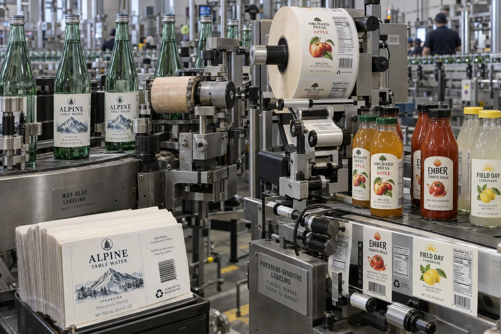

Short answer
Wet-glue labels often suit long, stable bottle runs on dedicated equipment; pressure-sensitive labels usually suit flexible SKU mixes, fast changeovers and complex materials or shapes. Compare the complete applied cost, not only the printed-label price.
When a buyer asks which system is “more professional,” I know we are starting from the wrong end. Both can look excellent. The operational question is who applies the adhesive, what the line already owns and how often the artwork changes.
Two different production systems
| Factor | Wet glue / cut and stack | Pressure sensitive |
|---|---|---|
| Supply format | Individual labels in stacks | Pre-adhesive labels on rolls |
| Adhesive | Applied by labeling equipment | Built into the label construction |
| SKU changes | Can require magazine and glue-system setup | Often a roll and setting change |
| Materials | Commonly paper; specialized options exist | Paper, clear film, white film and textured stocks |
| Inventory | Compact stacks at high volume | Rolls include liner and cores |
| Line housekeeping | Glue preparation and cleanup matter | Liner waste and roll handling matter |
A composite sparkling-drink expansion
This is a composite planning example. A regional drink producer runs one bottle and two high-volume flavors on a wet-glue line. Marketing adds six seasonal flavors and a clear-film premium range. The team considers replacing the entire label system because pressure-sensitive samples look modern.
My first answer would be to keep the wet-glue line for the two stable volumes and test pressure-sensitive application for the short-run range. One format does not have to defeat the other. A split strategy can protect existing productive equipment while giving the new SKUs more flexibility.
Container condition changes the result
Bottle material, diameter variation, seams, surface energy, condensation and filling temperature affect application. A pressure-sensitive adhesive must match the surface and wet-use conditions. A wet-glue system needs compatible paper, adhesive chemistry and container handling. Neither method corrects a wet, dirty or highly inconsistent bottle by itself.
Unit price hides changeover economics
Wet-glue labels can be highly efficient for long repeated runs because the printed pieces contain no pressure-sensitive adhesive or liner. Pressure-sensitive labels may cost more per piece but reduce setup for multiple SKUs and make variable material choices easier. Include labor, cleanup, startup waste, downtime, obsolete inventory and liner disposal in the model.
Factory-side view
The cheapest label is sometimes attached by the most expensive hour
A fraction saved on printed pieces looks persuasive in a spreadsheet. It disappears quickly if a short SKU spends forty minutes in changeover and cleanup.
For a stable million-label run, the opposite can be true. Flexibility has value only when the business uses it.
Artwork and finish options
Pressure-sensitive production makes it straightforward to combine textured papers, clear no-label-look films, metallic stocks and specialty adhesives. Wet-glue labels can also use premium papers, varnishes, foil and embossing, but the finished label must remain compatible with magazine feeding, glue application and bottle performance.
Do not approve a finish from a flat sample alone. Apply production samples to filled bottles, pass them through conveyors and packing, then evaluate after the expected storage and moisture exposure.
Decision checklist
- List annual quantity and run size by SKU, not only total volume.
- Identify existing equipment, speed and changeover time.
- Document bottle material, shape, seam and surface condition.
- Define filling temperature, condensation and refrigeration.
- Compare label, glue, liner, labor, waste and cleanup together.
- Run decorated bottles through the actual pack-out and distribution route.
- Keep both formats if different SKU groups justify them.
For roll-fed application details, read our Hand Labeling vs Bottle Applicators guide. Brands considering a third format can compare Shrink Sleeves vs Pressure-Sensitive Labels.
Frequently asked questions
What is a wet-glue bottle label?
It is usually a separate paper label supplied in stacks. A labeling machine applies liquid adhesive during application, then places the label on the container.
What is a pressure-sensitive bottle label?
It is a pre-adhesive label carried on a release liner, commonly supplied in rolls. The applicator peels the label from the liner and presses it onto the bottle.
Which format is better for many SKUs?
Pressure-sensitive labels often simplify short runs and changeovers because each SKU arrives as a finished roll. The actual advantage depends on equipment, setup and purchasing volume.
Are wet-glue labels always cheaper?
At large stable volumes they can have an attractive unit cost, but the comparison should include glue handling, line setup, waste, changeovers, inventory and container preparation.
Related label guides
- Food Allergen Labeling: A Packaging Proof Guide
- Label Roll Core Size and Outer Diameter Guide
- Glassine vs PET Release Liners for Roll Labels
Review the complete label construction
Send package photos, material details, finished label size, quantity by artwork, storage conditions and application method. We can review fit, material and production details before preparing a quote and digital proof.